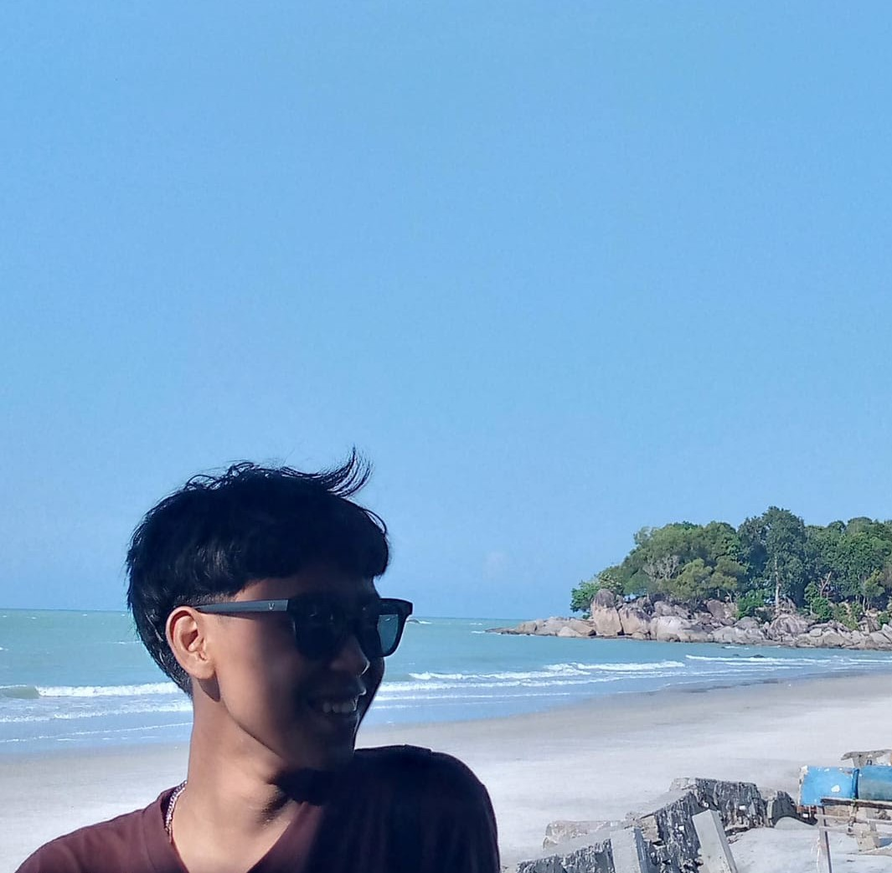
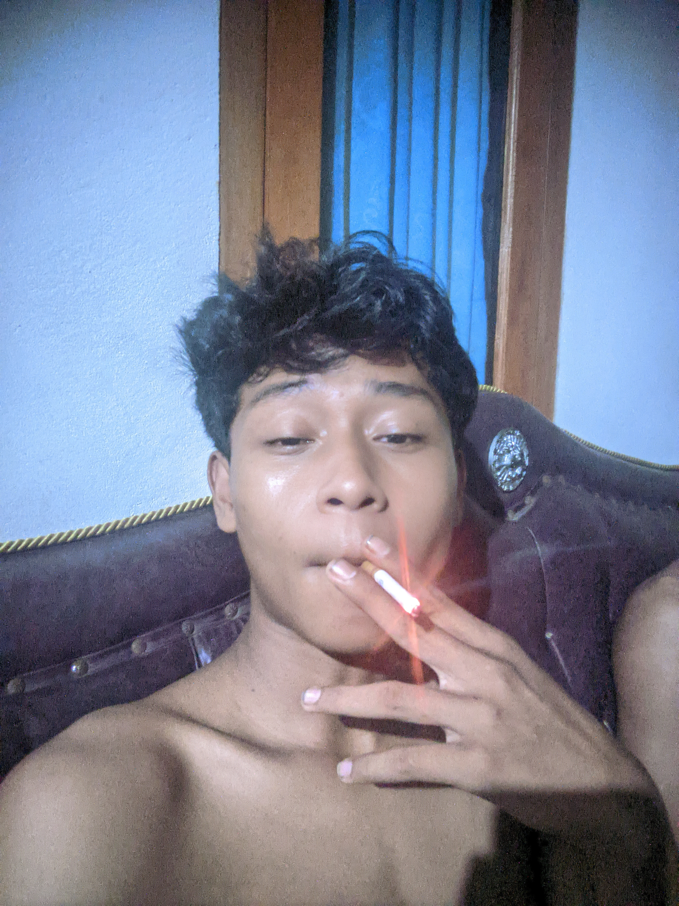

MASIH BELAJAR, MASIH PENASARAN.
Bagi gue, dunia ini terlalu menarik untuk sekadar dilewati tanpa dipertanyakan. Gue selalu terdorong untuk membongkar ide, mencari akar masalah, dan memahami struktur di balik setiap fenomena.


Gue adalah seorang penjelajah gagasan. Rasa penasaran gue bukan sekadar dorongan impulsif untuk tahu hal baru, melainkan metode untuk memahami dunia. Gue senang mendalami subjek yang berseberangan—dari presisi logika kode pemrograman hingga kompleksitas interpretasi norma hukum.
Gue tidak mudah puas dengan jawaban permukaan atau narasi yang sudah jadi. Ketika dihadapkan pada suatu informasi, gue terbiasa melakukan dekonstruksi: membedah asumsi, memeriksa validitas data, dan melihat dari berbagai sudut pandang sebelum mengambil kesimpulan.
Prinsip utama yang gue pegang adalah keseimbangan antara empati dan logika. Logika tanpa empati menjadi dingin dan kaku, sementara empati tanpa logika rentan terhadap bias dan manipulasi.
Bagi gue, proses belajar tidak pernah selesai. Selama masih ada pertanyaan yang belum terjawab, di situlah alasan gue untuk terus bergerak maju.
Kenapa orang gampang percaya opini tanpa mencari fakta?
Di era banjir informasi, fenomena echo chamber dan confirmation bias makin marak. Banyak orang lebih memilih kenyamanan emosional yang mendukung keyakinan awal mereka ketimbang menghadapi fakta keras yang memicu disonansi kognitif.
Bagaimana teknologi memengaruhi kemandirian berpikir kita?
Otomasi dan kecerdasan buatan memberikan kemudahan luar biasa. Namun, jika kita terlalu bergantung pada jawaban instan tanpa memahami prosesnya, kita berisiko mengikis kemampuan analisis kritis dan kreativitas murni.
Di mana batas antara Keadilan Hukum dan Kepastian Hukum?
Aturan yang tertulis di atas kertas sering kali bentrok dengan realitas sosial yang dinamis. Bikin gue berpikir: bagaimana cara membangun sistem yang adil tanpa merusak ketertiban umum?
Inisiatif membuat panduan visual interaktif seputar jenis-jenis logical fallacy untuk membantu netizen menyaring argumen tak berdasar di media sosial.
Eksplorasi perbandingan antarmuka logika kondisional dalam pemrograman (if-else statement) dengan struktur pembuatan putusan dalam penalaran hukum.
Dokumentasi terbuka yang berisi rangkuman isu rumit seputar filsafat, sains, dan teknologi yang disederhanakan agar nyaman dibaca oleh siapa saja.